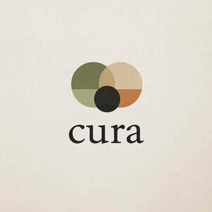

Trade Mark Journal No.2025/037 12 September 2025
UK00004237192 21 July 2025 (35,41,43,44)

- Class 35
- Advice relating to the business management of fitness clubs; Advice relating to the business operation of fitness clubs; Management of health care clinics for others; Business management of resort hotels; Hotel management for others; Administrative hotel management; Hotel management service [for others]; Business management of hotels; Hotels (Business management of -); Business management of car parking facilities; Business management of hotels for others.
- Class 41
- Health and fitness training; Sports and fitness; Exercise and fitness classes; Health and fitness club services; Health club [fitness] services; Exercise [fitness] training services; Fitness and exercise training services; Fitness and exercise instruction; Health club services [health and fitness training]; Fitness club services; Physical fitness consultation; Physical fitness centres; Physical fitness instruction; Physical fitness training services; Sports and fitness services; Fitness training services; Tuition in physical fitness; Physical fitness tuition; Personal trainer services [fitness training]; Personal fitness training services; Providing fitness and exercise facilities; Physical fitness centre services; Golf fitness instruction; Exercise [fitness] advisory services; Physical fitness education services; Conducting physical fitness conditioning classes; Health and wellness training; Consultancy relating to physical fitness training; Aerial fitness instruction; Physical fitness centres (Operation of -); Health club services [exercise]; Training services relating to fitness; Conducting fitness classes; Physical fitness assessment services for training purposes; Provision of health club [physical exercise] facilities; Education services relating to physical fitness; Educational services relating to physical fitness; Provision of educational health and fitness information; Instruction courses relating to physical fitness; Physical fitness instruction for adults and children; Conducting training sessions on physical fitness online; Aerobics training services; Training in yoga; Gym activity classes; Health club services; Aerobic and dance facilities; Sports training; Training in sports; Physical health education; Rental of sports or exercise equipment; Aerobics competitions; Providing health club and gymnasium services; Provision of educational services relating to fitness; Training related to nutrition; Exercise classes; Supervision of physical exercise; Gymnasium services relating to weight training; Providing of training in the field of health care and nutrition; Entertainment in the nature of weight lifting competitions; Physical training services; Strength and conditioning training; Personal coaching [training]; Life coaching (training); Providing obstacle course training gym facilities; Training services relating to health and safety; Recreation and training services; Education and training in the field of occupational health and safety; Training services relating to occupational health; Providing instruction and equipment in the field of physical exercise; Education and training services in the field of occupational health and safety; Sports club services; Entertainment services in the nature of a wrestling club; Training of sports players; Personal trainer services; Sports coaching; Health education; Education services relating to nutrition; Cooking instruction; Artistic management of musical shows; Organizing cultural and arts events.
- Class 43
- Reservation of hotel accommodation; Booking of hotel accommodation; Booking of hotel rooms for travellers; Hotel reservations; Hotel restaurant services; Hotel room booking services; Resort hotel services; Hotel services; Hotel accommodation services; Hotel accommodation reservation services; Hotel reservation services; Appraisal of hotel accommodation; Arranging of hotel accommodation; Arranging hotel accommodation; Providing hotel and motel services; Providing hotel accommodation; Hotel information; Reservation of accommodation in hotels; Provision of hotel accommodation; Resort hotels; Booking agency services for hotel accommodation; Agency services for booking hotel accommodation; Providing room reservation and hotel reservation services; Hotel catering services; Travel agency services for reserving hotel accommodation; Hotels and motels; Booking of campground accommodation; Providing accommodation in hotels and motels; Hotels, hostels and boarding houses, holiday and tourist accommodation; Reservation of rooms for travellers; Guesthouse; Booking services for hotels; Reservation of tourist accommodation; Rental of rooms; Booking of restaurant seats; Hotel services for preferred customers; Booking of accommodation for travellers; Restaurant reservation services; Restaurant services provided by hotels; Hotel reservation services provided via the Internet; Resort lodging services; Tourist agency services for booking accommodation; Making hotel reservations for others; Reservation services for the booking of accommodation; Providing exhibition facilities in hotels; Consultancy services relating to hotel facilities; Rental of rooms as temporary living accommodations; Reservation and booking services for restaurants and meals; Booking services for holiday accommodation; Accommodation reservation services; Reservation services for accommodation; Rental of vacation accommodation; Reservation of restaurants; Booking services for accommodation; Booking agency services for holiday accommodation; Tourist camp services [accommodation]; Arranging of meals in hotels; Restaurant services; Travel agency services for booking accommodation; Holiday lodgings; Rating holiday accommodation; Rental of holiday accommodation; Travel agency services for booking restaurants; Tour operator services for the booking of temporary accommodation; Reservation of temporary accommodation; Bar and restaurant services; Restaurant and bar services; Providing conference rooms; Hospitality services [accommodation].
- Class 44
- Fitness testing; Medical testing for fitness evaluation; Medical testing services, namely, fitness evaluation; Health spa services; Exercise facilities for health rehabilitation purposes (Provision of -); Personality testing [mental health services]; Mental health services; Providing mental health rehabilitation facilities; Health care relating to remedial exercise; Health counseling; Mental health screening services; Health center services; Health centers; Health care in the nature of health maintenance organizations; Beauty care services provided by a health spa; Health resort services [medical]; Nutrition counseling; Health care; Health counselling; Health care relating to hydrotherapy; Health care relating to acupuncture; Medical health assessment services; Health care relating to homeopathy; Home health care services; Consultancy relating to health care; Managed health care services; Advisory services relating to health care; Health hydro services; Consulting services relating to health care; Psychological care.
Cennydd John